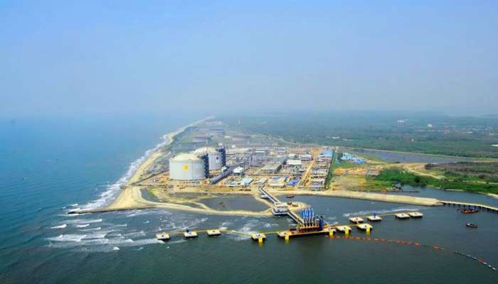
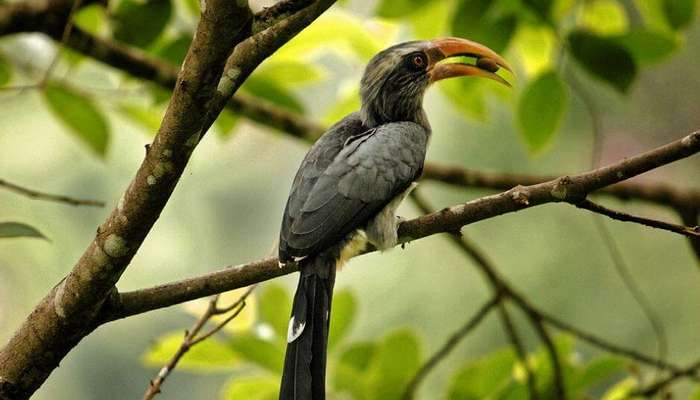
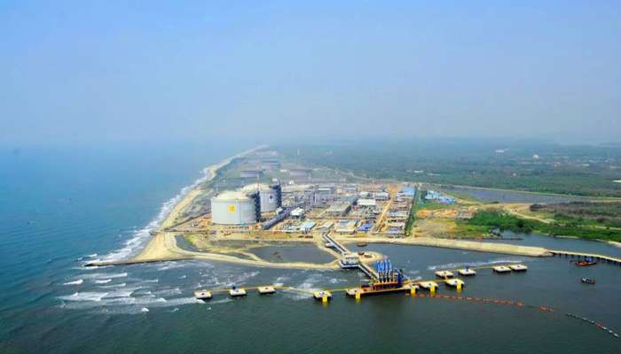
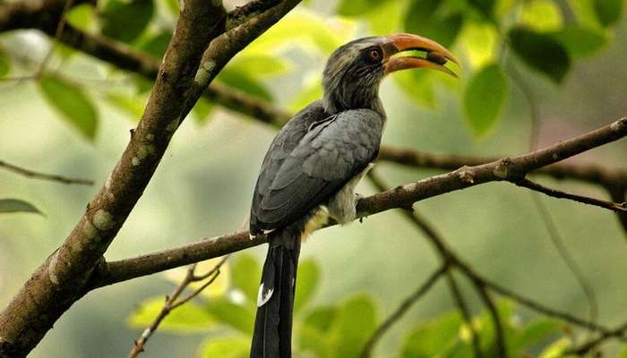

The Museum of Mattancherry The Museum of Mattancherry |
Vypeen Island | Thattekkad Bird Sanctuary |
 Painavu Painavu |
 Ilaveezha Poonchira Ilaveezha Poonchira |
 Thommankuthu Waterfalls Thommankuthu Waterfalls |
| The Museum of Mattancherry |
Vypeen Island | Thattekkad Bird Sanctuary |
| Painavu |
Ilaveezha Poonchira |
Thommankuthu Waterfalls |